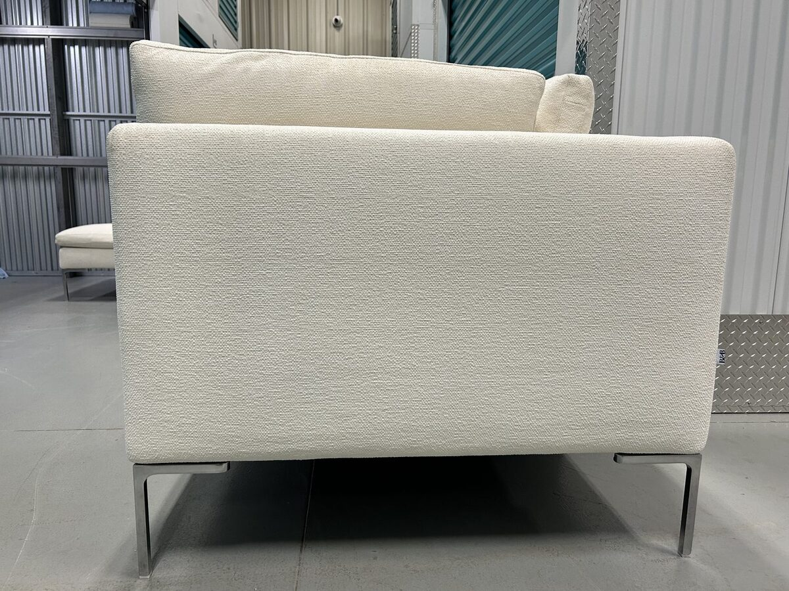

B&B Italia is one of the best-known names in contemporary Italian design, and its prices reflect that. If you’ve come across a pre-owned piece in Edmonton, the useful questions are what the brand actually builds, how it differs from the other names you’re weighing, how to confirm a piece is genuine, and what to check before you buy.
This guide covers who B&B Italia is, how its sofas are built, where to see or buy one, how it compares with Natuzzi, Cassina, and Crate & Barrel, and how to inspect a used piece. The Charles sofa, designed by Antonio Citterio, comes up often because it’s one of the brand’s longest-running designs and the one we’ve bought, but it illustrates the brand rather than covering the whole catalogue.
Who Is B&B Italia?
B&B Italia was founded in 1966 by Piero Ambrogio Busnelli in Novedrate, in the Como province of northern Italy, the heart of the country’s furniture industry. Busnelli’s idea was industrial rather than artisanal: modern manufacturing combined with serious design talent could make formally innovative furniture consistently and at scale.
The company began as a joint venture with Cesare Cassina, called C&B Italia. In 1973 Busnelli bought out Cassina’s share and renamed it B&B Italia, and the two companies have been separate ever since. Busnelli worked with leading Italian designers from the start, including Mario Bellini, Afra and Tobia Scarpa, and Gaetano Pesce, and Antonio Citterio, who later designed the Charles, has worked with the company for decades.
B&B Italia has won the Compasso d’Oro, Italy’s best-known design award, several times, including for Mario Bellini’s Le Bambole. In 1989 it became the first company to receive the award as a company, for how it combined research and technology with design.
Today B&B Italia belongs to the Flos B&B Italia Group, alongside Flos and Louis Poulsen lighting, its sister furniture brand Maxalto, Arclinea kitchens, and Audo, among others. The group is jointly owned by the investment firms Investindustrial and Carlyle.
What B&B Italia Actually Builds
Most high-end sofas are judged on traditional markers: hardwood frames, spring suspension, and heavily upholstered seats. The Charles combines a tubular-steel frame with moulded polyurethane foam. Other B&B Italia collections use different construction, so check the specifications for the model you’re considering.
For the Charles, B&B Italia lists:
- Frame: tubular steel and steel profiles, padded with flexible cold-shaped polyurethane foam and a polyester fibre cover.
- Seat cushions: shaped polyurethane in different densities, with sterilized down and a polyester fibre cover.
- Back cushions: polyester fibre fill in a box-style construction, light and easy to reposition.
- Feet: die-cast aluminium in an inverted “L”, raising the sofa 19 centimetres off the floor. They’re the piece’s most recognizable detail and one of the first things to check for wear.
Upholstery. B&B Italia offers a wide range of fabrics and leathers new. On the Charles we bought, the covers came off the frame, attached with Velcro, so they can be taken off for professional cleaning, and replacement covers may be an option without reupholstering the frame.
The result is less about plushness than precision: a controlled, architectural kind of luxury built to keep its shape.

The Charles: The Brand’s Reference Point
Antonio Citterio designed the Charles for B&B Italia in 1997, and it has stayed in the catalogue since. That longevity is itself an argument for the design: a low profile, a wide seat, one seat cushion per section, loose back cushions, and the inverted-L aluminium feet that seem to lift the sofa off the floor. Nothing about it is decorative that isn’t also structural, and the single seat cushion per section avoids the gaps that open between multiple cushions over time.
The Charles comes in configurations from a two-seat sofa to L-shaped and U-shaped sectionals, with chaise and corner sections. On a multi-piece configuration, check that the sections line up and connect securely.
B&B Italia also makes a Charles Large and a Charles Outdoor. The Outdoor version, from 2010, uses a tubular aluminium frame and powder-coated aluminium feet rather than a steel frame, so check the label to confirm which Charles you’re looking at.
We’ve carried the Charles L-shaped sectional, and handling one in person shows what photos don’t. It doesn’t rely on decoration or scale; its presence comes from proportion and precision.
Other B&B Italia sofas you’ll see used
- Camaleonda. Mario Bellini’s 1970 modular sofa, reissued by B&B Italia. On the current edition, the modules attach with tie-rods and rings, so they can be unhooked and rearranged.
- Tufty-Time. A modular sofa by Patricia Urquiola, recognizable by its deep, grid-tufted cushions.
- Le Bambole. Mario Bellini’s soft, rounded seating, one of B&B Italia’s Compasso d’Oro winners.
You may also see Maxalto, B&B Italia’s sister furniture brand, which has long worked with Antonio Citterio. The label on our Charles carries both the B&B Italia and Maxalto names.
Where to Buy B&B Italia in Edmonton
As of October 2026, we couldn’t find a B&B Italia dealer in Edmonton. B&B Italia’s dealer locator lists Inform Interiors in Vancouver, the brand opened a Toronto showroom with the design firm Elte in 2024, according to Design Lines, and dealers in Toronto and Montreal also carry it. Edmonton buyers can order through a dealer or buy pre-owned locally; if you plan to see pieces in person, confirm which models the dealer has on display before you travel.
If you’re looking for Italian furniture you can see in Edmonton, local stores carry several Italian brands: Scandia Furniture lists Natuzzi Italia, LightForm carries Cassina, and F2 Furnishings and McElheran’s list ALF Italia. Our guide to Edmonton’s high-end furniture stores covers who carries what.
How B&B Italia Compares to the Brands You’re Cross-Shopping
B&B Italia vs. Natuzzi
These two Italian brands are often compared, but they aim at different things. Natuzzi is leather-led: its business is built around leather sofas, and it dyes and finishes its own leather in Italy. B&B Italia is design-led: the value is the design itself, who conceived it and how well it holds up as a design over decades, with construction engineered to keep that shape. Neither is a step up from the other; they answer different questions.
If leather is the priority, Natuzzi Italia is the more direct answer. If you want a specific design, a Charles, a Camaleonda, a Tufty-Time, B&B Italia is a different purchase entirely.
B&B Italia vs. Cassina
B&B Italia and Cassina share history through the 1966 to 1973 C&B Italia venture, but they’re separate companies today. B&B Italia belongs to the Flos B&B Italia Group; Cassina belongs to the Poltrona Frau Group, owned by the American office furniture company Haworth.
Cassina is best known internationally for its I Maestri collection, authorized production of 20th-century classics by designers such as Le Corbusier, Charlotte Perriand, Gerrit Rietveld, and Gio Ponti. B&B Italia focuses on original designs by contemporary designers. In Edmonton, Cassina is available new through LightForm. With either brand, authenticate a pre-owned piece carefully: famous designs attract copies.
B&B Italia vs. Crate & Barrel
Crate & Barrel has an Edmonton store at Southgate, so you can see and sit on a piece before you buy, which matters at any price. The comparison is less about construction than about what you’re buying: Crate & Barrel makes well-built contemporary sofas at much lower prices, while B&B Italia sells designs by named designers. If you want seating you can try locally, Crate & Barrel is the practical choice; if you want a particular B&B Italia design, there’s no local substitute.
Our guide to sofa brands and resale value covers how these brands compare used. If you’re coming from Rove Concepts, the step to B&B Italia is large, in price and in design approach.
How to Tell If B&B Italia Is Genuine
The Charles is widely imitated: low-profile sofas on aluminium feet are made by many manufacturers. Before you commit to a used piece:
- Check the label. Genuine pieces carry a manufacturer label, typically underneath or on the cushion liners, with the B&B Italia name, the model, and the designer. For the Charles, it should name Antonio Citterio. The label on ours, pictured at the top of this guide with its woven tag, read Made in Italy, Modello Charles, and Disegno Antonio Citterio, with an inspection (collaudo) stamp. A missing label on an older piece isn’t automatically a problem, but it calls for more checking.
- Check the details. On a Charles, look for the die-cast aluminium inverted-L feet and the construction B&B Italia lists above.
- Check the price. A price far below comparable listings for the same model and condition isn’t proof of anything, but it’s a reason to authenticate more carefully before you go further.
Inspecting Pre-Owned B&B Italia
Feet and frame
The aluminium feet are the most visible part of a Charles and among the first things to show wear. Check for scratches, chips in the finish, and any missing parts at the base of each foot. On multi-section configurations, check that the sections connect securely; if they shift, the connecting hardware may be worn or missing. That’s usually repairable, but price it in when judging whether the asking price is fair.
Upholstery
Because covers on many B&B Italia sofas come off, worn upholstery on a sound frame is a different proposition from a damaged frame under good covers. Assess the frame and cushions first, then weigh the covers against what cleaning or replacement would involve. Cleaning won’t fix every kind of wear or damage. Before buying a piece that needs new covers, confirm availability, fit, lead time, and cost with an authorized dealer or upholsterer.
On leather, check the seat folds and arms for cracking, and follow B&B Italia’s care instructions for that leather rather than a general treatment. On fabric, check for pilling, uneven fading, and damage at the most-used spots.
Cushions
Sit in each seat and compare the support. If a section feels softer or less even than its neighbours, inspect it more closely and check how it supports you when seated; pressing on it alone won’t tell you whether the cause is the filling, the foam, or something underneath. The loose back cushions are polyester-filled and lighter by design.
For the basics that apply to any brand, see our guide to assessing sofa quality in person.
Moving a B&B Italia Sectional
Whether you’re buying or selling, a large B&B Italia sectional needs planning to move. Separate the sections rather than carrying it assembled, and lift each one rather than sliding it, so the aluminium feet aren’t scraped or bent. Wrap the feet and cover the upholstery for the trip, and measure the doors, stairs, and turns each section has to pass through before moving day.
Is B&B Italia a Good Brand?
For buyers who want a specific design, yes. B&B Italia builds to a precise, engineered standard, and its designs come from named designers; the Charles, with its tubular-steel frame and moulded foam, has stayed in production since 1997. Construction varies by collection, so check the specifications for the model you’re considering. What you pay for above good seating is the design and the construction that keeps its shape. If you mainly want a comfortable, well-made sofa without caring about a particular design, other brands deliver that for much less, and that’s a sensible choice too. Pre-owned, judge the specific piece: authenticate it, then check the feet, frame, cushions, and covers.
Selling a B&B Italia Sofa or Sectional
We buy B&B Italia sofas and sectionals. Send photos and details; we aim to reply the same day. If the piece is a fit, we make an offer based on its model, age, and condition and explain how we got to it. Pickup is included in the offer, with no separate pickup fee. Once you accept, we schedule pickup with you, our crew collects it in an enclosed truck, and you’re paid by cash or e-transfer before it leaves your home.